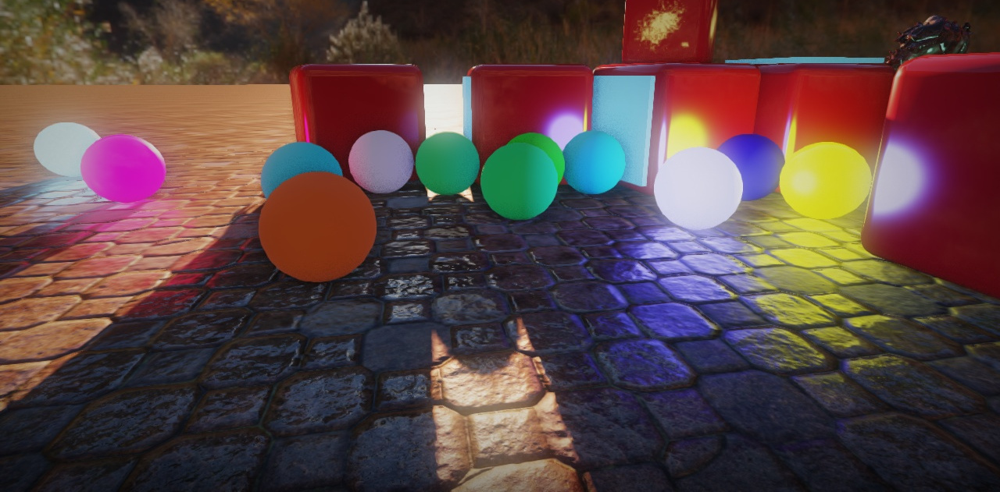

Dagon Engine
Dagon is an Open Source 3D game development framework for D language based on OpenGL 4.0 core profile and SDL2. The goal of this project is creating a modern, easy to use, extendable game engine for D due to the lack of such.
Please keep in mind that Dagon is still under development and not production-ready. Follow Dagon development on Trello to see priority tasks.
Important message to users of Dagon
due to the 2022 Ukraine crisis
I, Timur Gafarov, creator and maintainer of Dagon, live in Russia. The current political situation can lead to catastrophic consequences, up to the disconnection of all Russian developers from the world community for undefined period, which will seriously affect the projects in which they are actively involved. I hope these fears don't come true, but in case of the worst scenario, I will not be able to participate in the development of Dagon and manage its package in Dub registry. It is also not clear yet whether I will be able to receive funding through Patreon, PayPal and other financial platforms.
Therefore, I strongly discourage using Dagon as a critical dependency in important software products until the situation improves and there is confidence in the future for Russian developers.
Features
- Static and animated meshes, OBJ and IQM formats support
- Textures in PNG, JPG, TGA, BMP, HDR formats
- Own asset format with Blender exporter
- Deferred pipeline for opaque materials, forward pipeline for transparent materials and materials with custom shaders
- Physically based rendering (PBR)
- HDR rendering with Reinhard, Hable/Uncharted, ACES and Filmic tonemapping operators
- HDRI environment maps
- Directional lights with cascaded shadow mapping and volumetric scattering
- Spherical and tube area lights
- Spot lights
- Normal/parallax mapping, parallax occlusion mapping
- Deferred decals with normal mapping and PBR material properties
- Dynamic skydome with sun and day/night cycle
- Particle system with force fields. Blended particles, soft particles, shaded particles with normal map support, particle shadows
- Terrain rendering. Procedural terrain using OpenSimplex noise or any custom height field
- Water rendering
- Post-processing (FXAA, SSAO, lens distortion, motion blur, glow, LUT color grading)
- UTF-8 text rendering using TTF fonts via Freetype
- GUI and 2D graphics based on Nuklear. Canvas framework that renders vector shapes
- Keyboard, mouse, joystick input
- Unicode text input
- Ownership memory model
- Entity-component model
- Live asset reloading
- Built-in camera logics for quick and easy navigation (freeview and first person style view)
- Box container support for assets
- Built-in physics engine.
Dagon uses modern graphics techniques and so requires quite powerful graphics card. At least Turing-based NVIDIA cards are recommended (raytracing support is not required though). Main development and testing is done on GeForce GTX 1650.
Download
Latest source tarball can be downloaded from GitHub releases page. But it is easier to use Dub package instead. Add the following dependency to your dub.json:
"dagon": "~>0.13.0"
If you want to test new features, use master branch:
"dagon": "~master"
Dagon is distributed under the Boost Software License, Version 1.0
Getting Started
The recommended way to start using Dagon is creating a game template with "dub init". Run the following in an empty directory:
dub init --type=dagondub build
The engine has only one mandatory runtime dependency, SDL 2.0.14. On Windows it is automatically deployed if you are building with Dub. On other platforms you have to install it manually.
By running a template application you should see a sample scene with a plane and a cube.
Tutorials
Dagon has a number of tutorials on GitHub wiki (not all are complete):
- Simple Application
- Textures
- Normal maps
- Light Sources
- Environment Maps
- PBR
- First Person Camera
- Procedural Sky
- Post-processing
- Physics Integration
- Exporting Assets from Blender
- Particles
- Custom Shaders
Corresponding examples can be found here.
Additional examples can be found in Patreon Sponsor Folder which is now available to everyone.
Contributing
If you want to contribute code to Dagon, send pull requests to the project repository. Please, read Contributing Guidelines first.
Found a bug? Please, create an issue here.
Dagon was created by Timur Gafarov, Rafał Ziemniewski, Mateusz Muszyński, Björn Roberg, dayllenger, my-ijet.
Also thanks to Lawrence Aberba, Andrey Penechko, Robert Schadek, RUSshy, isaacs-dev for PRs and bug reports.
Sponsorship
If you like Dagon, please support its development on Patreon and get a reward depending on your donation amount. Supporters who donate $10 and more will be listed on this page as Sponsors. You can also make a donation via PayPal and NowPayments.
Big thanks to these awesome people for supporting Dagon: Daniel Laburthe, Rafał Ziemniewski, Kumar Sookram, Aleksandr Kovalev, Robert Georges, Jan Jurzitza (WebFreak), Rais Safiullin (SARFEX), Benas Cernevicius, Koichi Takio, Konstantin Menshikov.